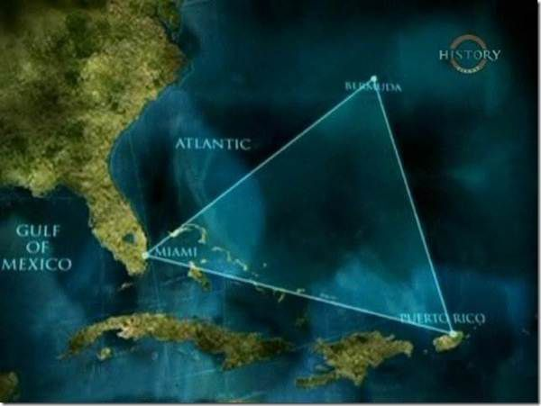

 Берму́дський трику́тник — назва, що зазвичай вживається до території площею 4 тис. км² і утворює на карті трикутник з вершинами у Бермудських островах, Пуерто-Рико і південній Флориді (США). Вважається, що в цих межах за незвичайних обставин зникли декілька суден та літаків. Ще одна зона на протилежному боці планети, «море диявола», поблизу Японії, має схожу репутацію. Скептики критикували книгу Берлиця та вказували на перебільшення і схильність до теорій змов у деяких описаних випадках. Вони також не вважають, що у Бермудському трикутнику випадків зникнення транспортних засобів більше аніж у будь-якій іншій співмірній за розміром та інтенсивністю транспортних потоків території світу. Берегова охорона США (US Coast Guard) також дотримується такої думки. Також, цікавою є опублікована у 1975 році книга Лоуренса Куше «Бермудський трикутник — таємниця відкрита». Автор проаналізував факти, вказані у книзі Берлиця, та прийшов до таких висновків: Ця зона характеризується дуже інтенсивним рухом транспорту, та частка зникнень транспортних засобів не перевищує аналогічний показник для інших регіонів із схожими параметрами. Бермудський трикутник знаходиться у зоні тропічних бурь і випадки можуть пояснюватись саме цим. Він також вказував на випадок неточності у книзі Берлиця, наприклад коли той наводить повідомлення про зникле судно, однак насправді зникле судно повернулося в порт через кілька днів після повідомлення у пресі про його зникнення. Обставини зникнення, які дійсно сталися у трикутнику, були часто описані у книжці 111неправильно: повідомлення «Транспорт, зниклий за тихої погоди», що іноді не відповідало справжній погоді на момент зникнення.